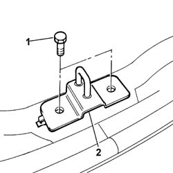
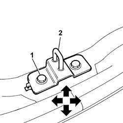

7015B18 tailgate lock striker - r+r
- Path
- Procedures > 70 FITTINGS > 7015 TAILGATE/ > 7015B tailgate locking/opening devices > 7015B18 tailgate lock striker - r+r
- Kind
- repair procedure (removal / refitting; the operation number is the code)
- Applies to
- all engines; all production periods
- Interactive page
- https://sloeber94.github.io/elrnDB-fPnd/en/#/2753126
Applies to: all engines; all production periods
 Removing
Removing
 Refitting
Refitting1. Undo the retaining bolts.
2. Remove the striker.

Applies to: all engines; all production periods
Refitting
RemovingCheck that the striker is undamaged.
Fit the striker.
1. Screw in the retaining bolts without tightening.
2. Use the bolt slots to move the striker into the correct position.

Applies to: all engines; all production periods
Check that the striker and the tailgate lock fit together correctly and that they are aligned with the tailgate closed.
Tighten the bolts fixing the striker to the recommended torque.
 | Fastening | Component | Ø | Value (daNm) |
|---|---|---|---|---|
- | Bolt | TAIL-GATE LOCK STRIKER | M6 | 0.8 |